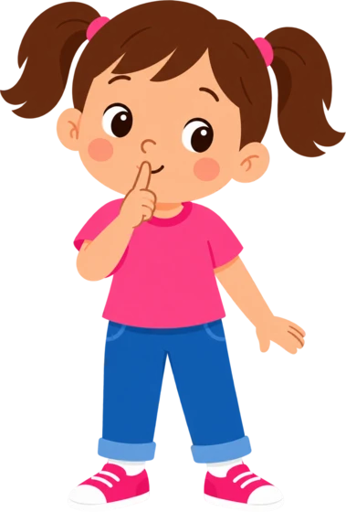
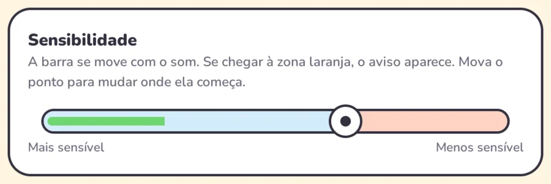
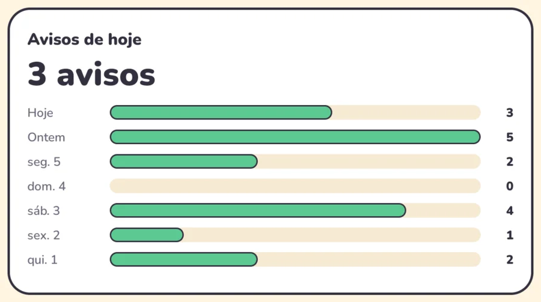
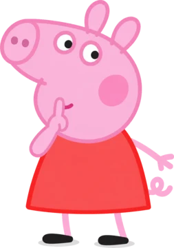
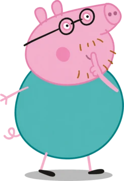
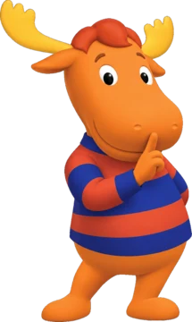
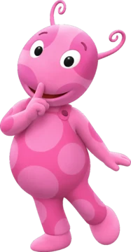

Um aviso gentil quando a voz sobe
Quando seu filho ou filha grita enquanto usa o tablet, aparece um personagem amigável fazendo “shh”. Sem broncas, sem sustos.

Como funciona
Sempre os mesmos três passos. Um aviso previsível faz parte da ideia.
Ouve
Com a tela ligada, mede o quanto está alto. Nunca grava.
Detecta o grito
Se o som chega à zona laranja, é um grito. Barulhos curtos não contam.
Avisa com calma
A tela escurece suavemente, aparece um personagem e toca um “shh”. Dois segundos depois, tudo volta.
Você no controle
Uma tela simples para famílias e terapeutas. Estas são capturas reais.
Sensibilidade sob medida
Fale e veja a barra verde se mover. Deixe o ponto logo acima de uma voz normal: só os gritos chegarão à zona laranja.

Veja como vai a semana
Conte os avisos de hoje e compare os últimos sete dias. Menos avisos, dias mais tranquilos.

Os personagens favoritos
Vem com uma menina e um menino. Adicione as imagens PNG dos personagens que seu filho ou filha conhece e ama; um aparece ao acaso.




Peppa Pig © Entertainment One (Hasbro). Backyardigans © Nickelodeon e Nelvana. Mostrados só como exemplo de personagens que você pode adicionar; o Shusher não tem vínculo com eles.
Seu áudio nunca sai do aparelho
O Shusher nem tem acesso à internet. O som só é usado para medir o volume e é descartado na hora. Sem contas, anúncios ou rastreamento.
Baixe o Shusher grátis
- Baixe o APK no seu tablet ou telefone Android.
- Abra e permita instalar dessa fonte.
- Escolha o idioma e toque em Ativar. Pronto!
É desenvolvedor? Compile a partir do código.